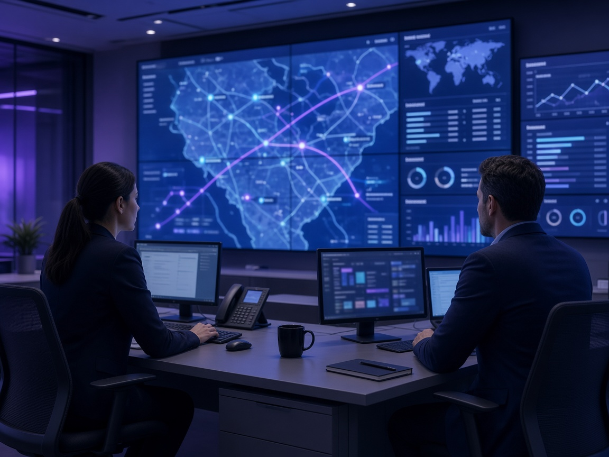

Empliados: Automatización inteligente para operaciones de transporte y atención al cliente
Empliados conecta choferes, clientes y mesa operativa con agentes de inteligencia artificial que planifican, siguen y documentan cada viaje. Su equipo mantiene el control; la IA se ocupa del resto.
Desafíos críticos en la logística terrestre: coordinación, visibilidad y documentación
La complejidad operativa fragmenta la comunicación y diluye el control de la flota.
Planificación dispersa
Coordinación manual a través de múltiples canales, planillas y llamadas que generan retrasos en la asignación de viajes.
Poca visibilidad en ruta
Falta de seguimiento unificado en tiempo real y desconocimiento del estado real del viaje entre el origen y el destino.
Documentación fragmentada
Remitos físicos extraviados, demoras en la digitalización de comprobantes y rendiciones incompletas al cierre de ruta.
Reclamos sin contexto
Dificultad para auditar y responder controversias por falta de trazabilidad y evidencia histórica precisa durante la entrega.

Automatización inteligente que coordina agentes de IA con choferes, clientes y su mesa operativa
Empliados opera de manera transversal sobre su infraestructura actual, permitiendo que la inteligencia artificial procese la fricción diaria mientras los decisores retienen el criterio final.
Leen y registran
Capturan datos de telemetría, mensajes y documentos sin fricción.
Proponen
Sugieren asignaciones, rutas y respuestas con base en el contexto operativo.
Detectan y alertan
Identifican desvíos, demoras en ruta y riesgos potenciales de forma preventiva.
Las personas validan y deciden
Su equipo aprueba las acciones críticas manteniendo siempre el criterio humano.
Gestión logística automatizada: desde la carga hasta la entrega documentada
Diez etapas coordinadas por agentes de IA para garantizar visibilidad total en cada kilómetro.
Gestión de viajes
Recepción de pedidos y generación del servicio de transporte.
Destinos
Parametrización y validación de puntos de carga, paradas y descarga.
Tracking express
Monitoreo geográfico continuo y telemetría de la unidad.
POP (Proof of Pickup)
Constancia fotográfica y digital de la carga efectiva en dársena.
Remitos
Control y digitalización inmediata de la documentación de tránsito.
ETA Dinámico
Estimación dinámica del tiempo estimado de arribo con actualización constante.
Incidencias
Registro, categorización y resolución de contingencias en ruta.
Rendición
Balance y cierre operativo de gastos y combustible por tramo.
POD (Proof of Delivery)
Certificación de entrega con firma, foto y coordenadas GPS.
Reclamos
Gestión estructurada de reclamos respaldada con evidencia auditable.
Agentes de inteligencia artificial especializados para cada etapa logística
Cada agente cumple una función precisa, coordinado por Empliados y supervisado en todo momento por su mesa operativa.
Agente de Viajes
Estructura la orden de transporte y consolida requisitos iniciales.
Agente de Destinos
Valida direcciones, ventanas horarias y restricciones de acceso vehicular.
Agente de Tracking
Supervisa el avance geográfico continuo y reporta desvíos de trayecto.
Agente POP
Valida la documentación y fotos del retiro de carga en origen.
Agente de Remitos
Extrae y coteja datos de remitos físicos mediante visión artificial.
Agente de ETA
Recalcula tiempos de llegada según tráfico, clima y detenciones en ruta.
Agente Incidencias
Clasifica eventos mecánicos o de ruta y alerta a la mesa operativa.
Agente de Rendición
Audita comprobantes de peaje, combustible y viáticos con soporte fotográfico.
Agente POD
Verifica la conformidad de entrega y registra la firma del receptor final.
Agente de Reclamos
Cruza evidencia documental y cronológica para auditar disputas al instante.
Atención al cliente y mesa operativa: supervisión humana con soporte de IA
Tecnología al servicio del operador, no para reemplazar su criterio ni su experiencia.
Operador
Gestiona el día a día, valida alertas operativas en curso y coordina con los choferes en tiempo real a través de los canales integrados.
Supervisor
Monitorea el cumplimiento de ANS de clientes, resuelve excepciones complejas y balancea recursos entre zonas y depósitos.
Administrador
Configura parámetros de negocio, esquemas de permisos, políticas de asignación automática y auditoría de gobierno integral.
Lógica de decisión coordinada
Agente lee
Captura telemetría y mensajes de campo
Agente propone
Calcula la alternativa o respuesta óptima
Mesa valida
El operador aprueba o corrige con 1 clic
Sistema registra
Ejecuta la acción y deja registro auditable
Infraestructura tecnológica: WhatsApp, chat, analítica y trazabilidad
WhatsApp Operativo
Comunicación bidireccional nativa con choferes sin requerir la instalación de apps adicionales ni capacitación técnica compleja.
Chat Central
Interfaz unificada para la mesa operativa donde convergen todas las conversaciones, alertas críticas y notificaciones de clientes.
Analítica
Métricas de puntualidad, cumplimiento de viajes, tiempos en andén y consumos en tableros consolidados para dirección logística.
Gobierno y trazabilidad
Registro inmutable de cada interacción, validación y cambio de estado para auditorías estrictas y certificaciones internacionales.
Beneficios de la automatización logística con inteligencia artificial
Mejoras directas en tiempos de respuesta, exactitud documental y reducción de contingencias no previstas.
Más trazabilidad
Control minuto a minuto de todo el ecosistema de transporte.
Menos errores operativos
Eliminación de desajustes en la carga de datos y transcripción manual.
Más visibilidad
Información unificada y transparente para su equipo y sus clientes.
Más evidencia
Respaldo digital fotográfico y documental en cada hito del viaje.
Más productividad
Menor tiempo administrativo por viaje despachado y entregado.
Solución para transportistas, operadores logísticos y empresas con distribución propia
Adaptable a organizaciones con flotas propias, contratadas o modelos mixtos de alta demanda.
Transportistas medianos
Que buscan profesionalizar su gestión y responder a exigencias de grandes dadores de carga con estándares multinacionales de auditoría.
Operadores logísticos
Que coordinan múltiples flotas, subcontratistas y canales de distribución complejos que demandan interoperabilidad continua.
Empresas con distribución propia
Que necesitan optimizar sus entregas directas, asegurar el cumplimiento de promesas comerciales y reducir fricción con el cliente final.
Preguntas frecuentes sobre automatización logística con IA
Empliados es una plataforma de inteligencia artificial que automatiza la gestión de operaciones de transporte. Coordina choferes, clientes y su mesa operativa con agentes de IA especializados que gestionan seguimiento de flota, digitalización de remitos, atención al cliente por WhatsApp y documentación de entregas. Su equipo mantiene el control final mientras la IA procesa la operación rutinaria.
Los choferes toman fotos de los remitos por WhatsApp y los agentes de IA especializados extraen los datos automáticamente mediante visión artificial. La información se valida y registra en el sistema de forma inmediata, eliminando la transcripción manual y los errores asociados. Todo queda documentado con timestamp y coordenadas GPS.
El agente POD (Proof of Delivery) procesa las fotos de la entrega, registra la firma digital del receptor y valida automáticamente las coordenadas GPS del punto de entrega. Todo genera un registro inmutable con evidencia completa y auditable que queda disponible de inmediato para su equipo y sus clientes.
Sí. El agente de Tracking monitorea geográficamente la ubicación continua de cada unidad y reporta desvíos de trayecto. El agente de ETA recalcula dinámicamente los tiempos de llegada según tráfico, clima y detenciones. Su mesa operativa tiene visibilidad completa del estado de cada viaje en tiempo real.
Los choferes envían mensajes, fotos o su ubicación por WhatsApp directamente a la mesa operativa, sin instalar aplicaciones adicionales. El agente de Incidencias clasifica automáticamente los eventos mecánicos o de ruta, extrae la información relevante y alerta a su equipo para que puedan responder según la prioridad de cada caso.
Su mesa operativa cuenta con información actualizada en tiempo real que puede compartir con sus clientes según su política de comunicación. Los detalles específicos de notificaciones automáticas y consultas de tracking los definimos juntos durante la implementación según sus necesidades comerciales.
Empliados opera de manera transversal sobre su infraestructura actual sin requerir reemplazo de sistemas existentes. Las opciones de integración con su ERP o TMS las evaluamos en la demo según su arquitectura particular. En muchos casos la integración se realiza de forma gradual durante la implementación.
Los tiempos de implementación dependen del alcance y complejidad de su operación, lo definimos juntos en la demo. Para solicitar una presentación, contáctenos por email o el formulario de esta página. Respondemos en menos de 24 horas hábiles con una propuesta personalizada según su volumen de viajes.
El agente de Incidencias registra la novedad con evidencia fotográfica, ubicación y timestamp. Su mesa operativa recibe la alerta de inmediato y puede coordinar con el cliente o reprogramar según su protocolo. Todo queda documentado para auditoría y el chofer recibe instrucciones claras sobre cómo proceder.
El agente de Rendición audita comprobantes de peaje, combustible y viáticos mediante visión artificial sobre las fotos enviadas por los choferes. Valida los gastos contra el recorrido GPS documentado y genera el balance de cierre operativo por tramo, facilitando la conciliación contable y detectando desvíos.
La plataforma consolida métricas de puntualidad, cumplimiento de viajes, tiempos en andén y consumos en tableros para dirección logística. Los reportes específicos y KPIs que necesita su operación los configuramos durante la implementación según sus prioridades de gestión y los estándares de servicio que debe cumplir.
La plataforma implementa estándares de seguridad ISO 27001 con registro inmutable de cada interacción, validación y cambio de estado. Los detalles técnicos de infraestructura, encriptación y cumplimiento normativo los revisamos en la demo, adaptándonos a los requisitos de auditoría y certificaciones que su operación requiera.
Automatice su operación logística con inteligencia artificial
Descubra cómo Empliados y los agentes de IA optimizan la gestión de sus viajes manteniendo el control en manos de su equipo.
Respuesta en menos de 24 horas hábiles. Presentación técnica personalizada según su volumen de viajes.